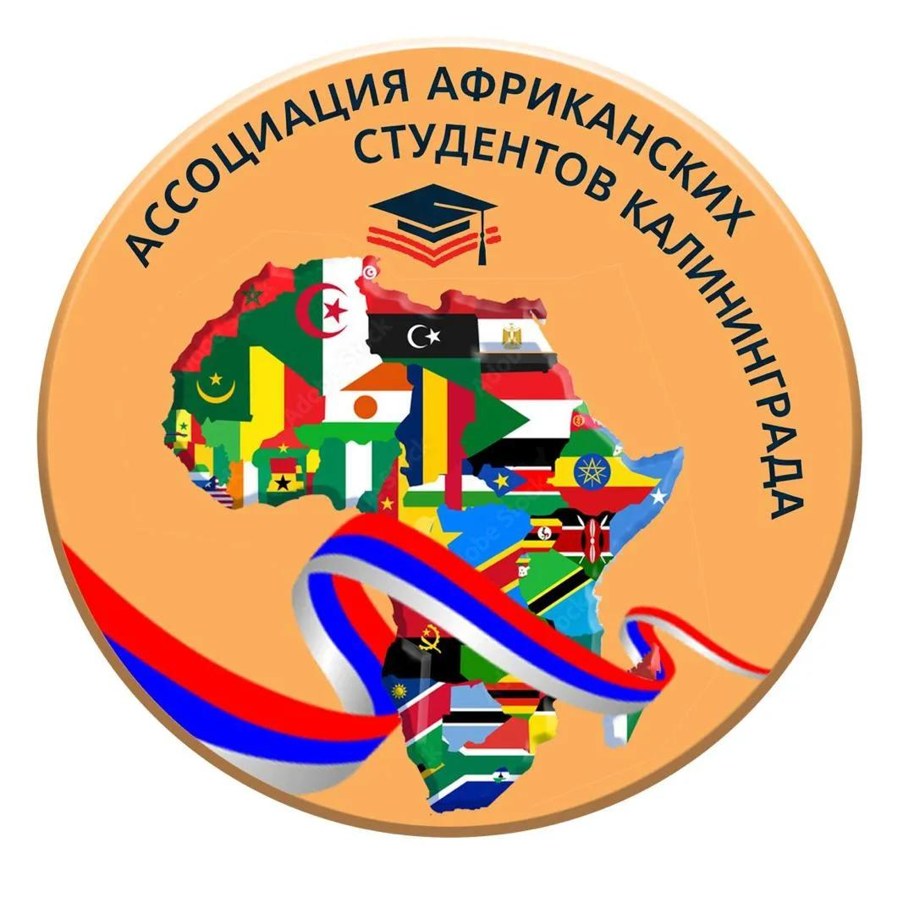

Единство в многообразии, вместе к успеху: мы встречаем, поддерживаем и объединяем африканских студентов, живущих в Калининграде.
Присоединиться к ассоциацииАЕАК объединяет африканских студентов Калининграда в единое сообщество: помогать друг другу в учёбе, адаптироваться к жизни в России и прославлять африканскую культуру.
Помощь новичкам: встреча в аэропорту, обустройство, оформление документов и практические советы.
Взаимная поддержка, занятия по подготовке и обмен материалами для успешной учёбы.
Культурные вечера, африканские дни, кухня, музыка и танцы: знакомство с нашими традициями.
Регулярные встречи для общения и празднования наших культур.
Каждый учебный год мы встречаем и сопровождаем студентов, впервые прибывших в Калининград.
Футбольные турниры, прогулки и спортивные мероприятия для здоровья и дружбы.
Информация о визах, университете, здоровье, транспорте и повседневной жизни в России.
Познакомьтесь с членами ассоциации и их направлениями работы.
Присоединяйтесь к сообществу: это бесплатно, и здесь вы найдёте семью вдали от дома.
Вступить в нашу группу Telegram📧 E-mail : aask.kaliningrad@gmail.com
📞 Телефон : +7 911 464-26-02
💬 Telegram : @kgtyafro